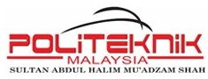

Education Protocols

Politeknik Sultan Abdul Halim Mu'adzam Shah
Diploma in Information Technology and Communication
2021 - 2023
During this foundational period, I developed core competencies across the full spectrum of IT. I mastered the Software Development Life Cycle (SDLC) and gained practical experience in system administration, network security, and database management.
TECHNICAL DATA ACQUIRED:
OOP
C++
Networking
Python
Java
PHP
HTML/CSS/JS
Android Studio
Editing Skill
Cyberpreneurship
Universiti Teknikal Malaysia Melaka (UTeM)
Bachelor of Computer Science (Artificial Intelligence)
2025 - Present
Building upon my IT foundation, this advanced degree focuses on the core pillars of modern AI. My specialization involves designing autonomous systems and integrating intelligence into complex environments.
CURRENT CORE MODULES:
- Advanced Data Science & Statistical Modeling
- Kinematics and Control for Robotics
- AI Manufacturing & Industrial Automation
- Intelligent Agents & Multi-Agent Systems
- Developing Robust AI and Machine Learning Solutions